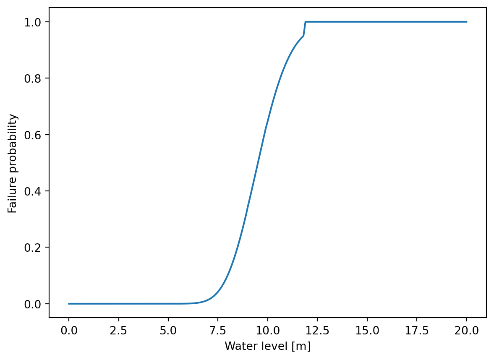

from pathlib import Path
import numpy as np
import pandas as pd
import matplotlib.pyplot as plt
from probabilistic_piping import ProbInput, ProbPipingFixedWaterlevelIntroduction to probabilistic piping
In this notebook, a barebones example is given on how to create a piping fragility curve using an Excel file as input for the ProbPipingFixedWaterlevel class.
Creating input data
Probabilistic calculations expect an instance of ProbInput. A practical way of making this ProbInput instance is from a specially crafted Excel sheet.
data_path = Path("../../../test/data/full_test.xlsx")
df_input = pd.read_excel(data_path, sheet_name="input", index_col=0, header=0)
df_input.head(3)| Beschrijving | Waarde | Kansverdeling | Verschuiving | Mean | Spreiding | Spreidingstype | Afknot_links | Afknot_rechts | Min | Step | Max | StDev | |
|---|---|---|---|---|---|---|---|---|---|---|---|---|---|
| Naam | |||||||||||||
| D | D -- Dikte pipinggevoelige zandlaag (aquifer) [m] | 4.44234 | Lognormaal | 0.0 | 9.000000 | 0.50 | Standaardafwijking | NaN | NaN | NaN | NaN | NaN | 0.500000 |
| D_cover | D_cover -- Dikte (cohesieve) deklaag in [m] | 3.12096 | Lognormaal | 0.0 | 4.000000 | 0.50 | Standaardafwijking | NaN | NaN | NaN | NaN | NaN | 0.500000 |
| d_70 | d_70 -- 70% kwantiel korrelgrootte van pipingg... | 0.0 | Lognormaal | 0.0 | 0.000161 | 0.12 | Variatiecoëfficiënt | NaN | NaN | NaN | NaN | NaN | 0.000019 |
The Excel data is converted to a ProbInput instance using the classmethod from_dataframe(). The ProbInput class has a number of attributes: params, stochasts, charvals, calc_options and hlist.
Depending on the type of calculation, not all options need to be set.
inp_data = ProbInput.from_dataframe(df_input)params are deterministic (fixed) variables
inp_data.params{'d_70m': 0.000208,
'g': 9.81,
'gamma_water': 10,
'r_c': 0.3,
'v': 1.33e-06,
'gamma_sp': 16.19,
't_norm': 300}stochasts are stochastic variables
inp_data.stochasts{'D': class=LogNormal name=LogNormal dimension=1 muLog=2.19568 sigmaLog=0.0555128 gamma=0,
'D_cover': class=LogNormal name=LogNormal dimension=1 muLog=1.37854 sigmaLog=0.124516 gamma=0,
'd_70': class=LogNormal name=LogNormal dimension=1 muLog=-8.74125 sigmaLog=0.119571 gamma=0,
'eta': class=LogNormal name=LogNormal dimension=1 muLog=-1.30934 sigmaLog=0.00370369 gamma=0,
'gamma_sat': class=LogNormal name=LogNormal dimension=1 muLog=1.93859 sigmaLog=0.120984 gamma=10,
'h_exit': class=Normal name=Normal dimension=1 mean=class=Point name=Unnamed dimension=1 values=[-1.5] sigma=class=Point name=Unnamed dimension=1 values=[0.1] correlationMatrix=class=CorrelationMatrix dimension=1 implementation=class=MatrixImplementation name=Unnamed rows=1 columns=1 values=[1],
'i_ch': class=LogNormal name=LogNormal dimension=1 muLog=-0.712758 sigmaLog=0.198042 gamma=0,
'k': class=LogNormal name=LogNormal dimension=1 muLog=-9.05833 sigmaLog=0.246221 gamma=0,
'L': class=LogNormal name=LogNormal dimension=1 muLog=4.75131 sigmaLog=0.0332908 gamma=0,
'm_p': class=Normal name=Normal dimension=1 mean=class=Point name=Unnamed dimension=1 values=[1] sigma=class=Point name=Unnamed dimension=1 values=[0.08] correlationMatrix=class=CorrelationMatrix dimension=1 implementation=class=MatrixImplementation name=Unnamed rows=1 columns=1 values=[1],
'm_u': class=Normal name=Normal dimension=1 mean=class=Point name=Unnamed dimension=1 values=[1] sigma=class=Point name=Unnamed dimension=1 values=[0.1] correlationMatrix=class=CorrelationMatrix dimension=1 implementation=class=MatrixImplementation name=Unnamed rows=1 columns=1 values=[1],
'r_exit': class=LogNormal name=LogNormal dimension=1 muLog=-0.228119 sigmaLog=0.0997513 gamma=0,
'theta': class=LogNormal name=LogNormal dimension=1 muLog=3.61092 sigmaLog=0.00027027 gamma=0}charvals are characteristic values of the stochastic variables
inp_data.charvals{'D': 4.44234,
'D_cover': 3.12096,
'd_70': 1.88016e-07,
'eta': 0.282277,
'gamma_sat': 13.4991,
'h_exit': 0.0996889,
'i_ch': 0.22333,
'k': 4.75458e-09,
'L': 88.0597,
'm_p': 0.996009,
'm_u': 0.994455,
'r_exit': 0.793916,
'theta': 42.8826,
'h': 5.0}calc_options are options to be used in specific probabilistic methods
inp_data.calc_options{'Rekentechniek': 'FORM AbdoRackwitz',
'FORM start': 'mean',
'MaximumAbsoluteError': 0.01,
'MaximumRelativeError': 0.01,
'MaximumResidualError': 1e-05,
'MaximumConstraintError': 0.01,
'MaximumIterationNumber': 100,
'MaximumEvaluationNumber': 1000000000,
'MaximumCoefficientOfVariation': 0.1,
'BlockSize': 1000,
'MaximumOuterSampling': 1000}hlist is a range of water levels
np.array(inp_data.hlist)array([ 0. , 0.1, 0.2, 0.3, 0.4, 0.5, 0.6, 0.7, 0.8, 0.9, 1. ,
1.1, 1.2, 1.3, 1.4, 1.5, 1.6, 1.7, 1.8, 1.9, 2. , 2.1,
2.2, 2.3, 2.4, 2.5, 2.6, 2.7, 2.8, 2.9, 3. , 3.1, 3.2,
3.3, 3.4, 3.5, 3.6, 3.7, 3.8, 3.9, 4. , 4.1, 4.2, 4.3,
4.4, 4.5, 4.6, 4.7, 4.8, 4.9, 5. , 5.1, 5.2, 5.3, 5.4,
5.5, 5.6, 5.7, 5.8, 5.9, 6. , 6.1, 6.2, 6.3, 6.4, 6.5,
6.6, 6.7, 6.8, 6.9, 7. , 7.1, 7.2, 7.3, 7.4, 7.5, 7.6,
7.7, 7.8, 7.9, 8. , 8.1, 8.2, 8.3, 8.4, 8.5, 8.6, 8.7,
8.8, 8.9, 9. , 9.1, 9.2, 9.3, 9.4, 9.5, 9.6, 9.7, 9.8,
9.9, 10. , 10.1, 10.2, 10.3, 10.4, 10.5, 10.6, 10.7, 10.8, 10.9,
11. , 11.1, 11.2, 11.3, 11.4, 11.5, 11.6, 11.7, 11.8, 11.9, 12. ,
12.1, 12.2, 12.3, 12.4, 12.5, 12.6, 12.7, 12.8, 12.9, 13. , 13.1,
13.2, 13.3, 13.4, 13.5, 13.6, 13.7, 13.8, 13.9, 14. , 14.1, 14.2,
14.3, 14.4, 14.5, 14.6, 14.7, 14.8, 14.9, 15. , 15.1, 15.2, 15.3,
15.4, 15.5, 15.6, 15.7, 15.8, 15.9, 16. , 16.1, 16.2, 16.3, 16.4,
16.5, 16.6, 16.7, 16.8, 16.9, 17. , 17.1, 17.2, 17.3, 17.4, 17.5,
17.6, 17.7, 17.8, 17.9, 18. , 18.1, 18.2, 18.3, 18.4, 18.5, 18.6,
18.7, 18.8, 18.9, 19. , 19.1, 19.2, 19.3, 19.4, 19.5, 19.6, 19.7,
19.8, 19.9, 20. ])Running a fragility curve calculation
From this input data, we can now create a probabilistic piping calculation for a fixed water level. Fragility curves can be created for the submechanisms of heave, uplift, sellmeijer or the combination of the former as the mechanism combi.
In this example, a fragility curve is calculated for the combined mechanism. Furthermore, all stochasts are assumed to be independent (copula=None).
prob = ProbPipingFixedWaterlevel(progress=False)
_, pc = prob.fixed_waterlevel_fragilitycurve(inp_data, z_type="combi", copula=None)The results variable contains a list of ProbResult instances. A ProbResult is created for each water level, as each water level is a separate probabilistic calculation. A ProbResult instance contains detailed information of such probabilistic calculation.
pc.results[-1]ProbResult(h=20.0, prob_cond=1.0, converged=True, z_val=-0.008833492209245453, physical_design={'D': 8.986143178848712, 'D_cover': 6.582844953831219, 'd_70': 0.00015985317099639446, 'eta': 0.2699981481671999, 'gamma_sat': 16.948956640465564, 'h_exit': -1.484810143498153, 'i_ch': 1.8689020278023638, 'k': 0.00011641710001743983, 'L': 115.7358486166931, 'm_p': 1.0, 'm_u': 1.0, 'r_exit': 0.5753293471052043, 'theta': 36.99999864864872}, standard_design={'D': 0.0, 'D_cover': 4.063136676688446, 'd_70': 0.0, 'eta': 0.0, 'gamma_sat': 0.0, 'h_exit': 0.15189856501846832, 'i_ch': 6.756684392079229, 'k': 0.0, 'L': 0.0, 'm_p': 0.0, 'm_u': 0.0, 'r_exit': -3.2550328765482837, 'theta': 0.0}, importancefactors={'D': -0.0, 'D_cover': -0.4762718147944334, 'd_70': -0.0, 'eta': -0.0, 'gamma_sat': -0.0, 'h_exit': -0.017805210846359977, 'i_ch': -0.792003467634163, 'k': -0.0, 'L': -0.0, 'm_p': -0.0, 'm_u': -0.0, 'r_exit': 0.3815476905376247, 'theta': -0.0}, functionevals=45, mechanism='combi')Visualizing the calculated fragility curve
Using the result object, the fragility curve can be visualized using the water levels and the conditional probabilities.
fig, ax = plt.subplots()
ax.plot([r.h for r in pc.results], [r.prob_cond for r in pc.results])
ax.set_xlabel("Water level [m]")
ax.set_ylabel("Failure probability");